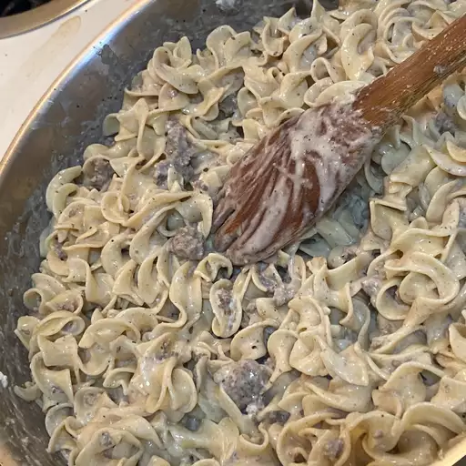

Strogonoff

Ingredients
- 1 pound ground beef
- ½ teaspoon garlic powder
- ½ teaspoon salt
- ½ teaspoon ground black pepper
- 1 cube beef bouillon
- 1 medium onion, chopped
- 8 ounces fresh mushrooms, sliced
- 1 pint sour cream
- 4 ounces egg noodles, cooked and drained
Directions
- In a large skillet brown beef in oil over medium high heat. When meat is browned, drain excess fat from skillet. Add garlic powder, salt and pepper and stir in.
- Add bouillon, onion and mushrooms to skillet and saute until onions are translucent. Remove from heat (very important) and add sour cream. Stir all together and serve over hot cooked egg noodles.